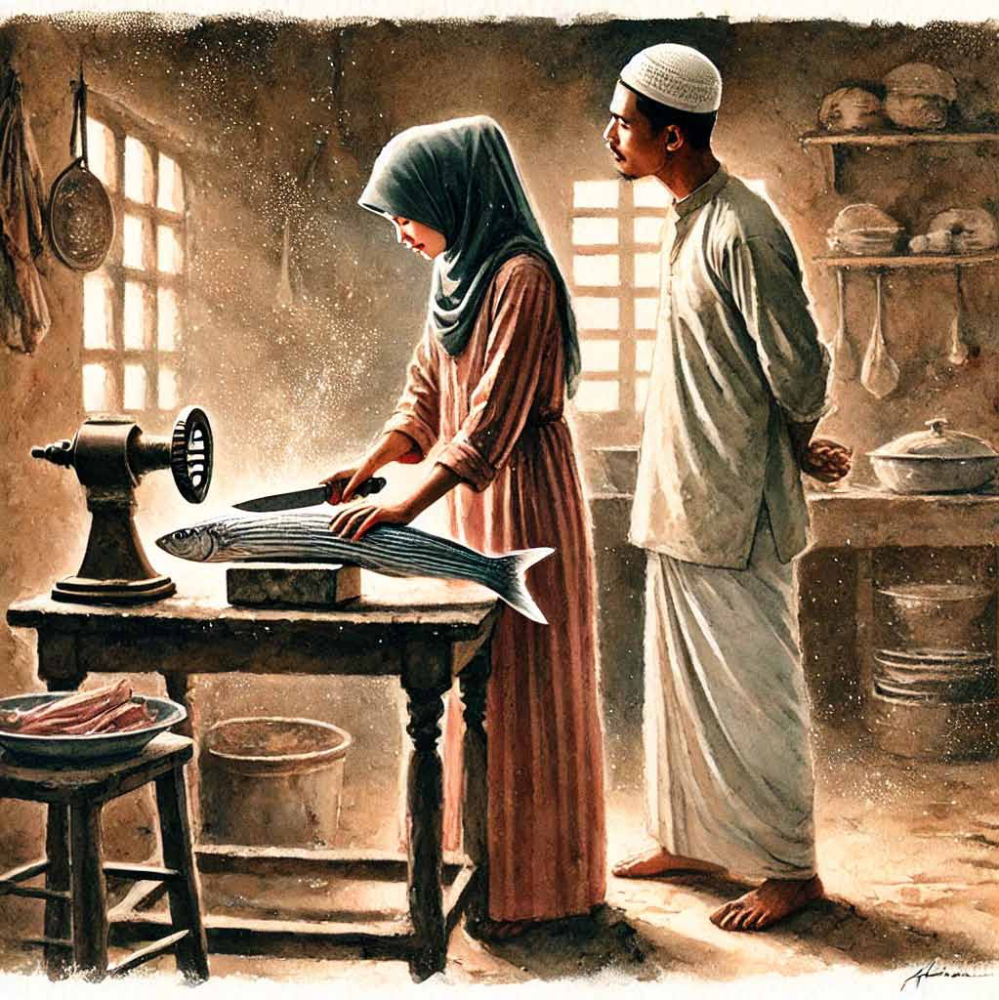

For whom the bells toll: Reflections on the Province
For whom the bells toll: Reflections on the Province
Jaffna Monitor
hellojaffnamonitor@gmail.com
78
BY: Jeevan Thiagarajah
Former Governor Northern Province/
Former Member Commissioner
Election Commission.
Summary
Total population
Household population
Urban Population
Northern Province
997,754
978,859
166,285 (16.7%)
Jaffna district
567,229
557,715
112,403 (19.8%)
Mannar district
95,430
92,763
22,183 (23.2%)
Vavuniya district
164,852
161,229
31,699 (19.2%)
Mullaithivu district
66,526
65,042
-
Kilinochchi district
103,717
102,110
-
Re-settled population
Re-settled households
Northern Province
388517
112297
Jaffna district
158747
46654
Mannar district
34229
9876
Vavuniya district
40722
12691
Mullaithivu district
58114
16771
Kilinochchi district
96705
26305
Deaths (2005 - 2009)
Deaths - 2009
Northern Province
22,329
11172
Jaffna district
10,884
3677
Mannar district
1427
608
Vavuniya district
2,857
1542
Mullaithivu district
2,716
2019
Kilinochchi district
4,445
3326
T
he Northern Province does without a doubt have a rich and
proud history. Marred by turbulence from the late 70’s.The
Jaffna Monitor has carried the related narrative previously. The
material in this piece quotes extensively from a Census Report.
It does not attempt to interpret the contents. Suffice to say these
numbers have been the subject of great emotions.
ENUMERATION OF VITAL EVENTS 2011(ISBN 978-955-
577-779-7)
NORTHERN PROVINCE Enumeration of Vital events - in the Northern Province was carried
out by the DCS commencing 10thJune till 15thAugust 2011. The field data collection required
for the project covering the entire Northern Province was planned and executed within the
period of two weeks from 3rd July to 17th July, 2011.
For whom the bells toll:
Reflections on the Province
Guest Column
Jaffna Monitor
hellojaffnamonitor@gmail.com
79
Untraceable population (2005 - 2009)
Untraceable population (2009)
Northern Province
4,156
2635 Jaffna district 1,359
651 Mannar district 335
164
Vavuniya district
603
378
Mullaithivu district
635
488
Kilinochchi district
1224
954 DEATHS AND UNTRACEABLE PERSONS The EVE 2011 paid special attention to deaths and untraceable persons reported in the Northern Province during the last 3 decades since 1982. Family members reported details of deceased or untraceable persons when such death or intractability has taken place while they were still members of the family and the basic information gathered at district level are shown in table 3.1.12. Table 3.1.12: Deaths and untraceable persons by district reported from 1982 to July 2011 EVE 2011 recorded 71,201 cases of deaths/ untraceable persons reported by respondents in the entire Northern Province since 1982. Nearly 5% of the cases were partly responded due to the sensitiveness of the status in question and due to various other reasons unstated or not known. Table 3.1.13: Deaths by reported district and year from 2005 to 2009 - Northern Province District Total Status Dead Untraceable Not stated Total 71201 61651 6352 3198 Jaffna 42410 38006 2539 1865 Mannar 4912 4144 551 217 Vavuniya 7925 6567 999 359 Mullaithivu 6346 5229 799 318 Kilinochchi 9608 7705 1464 439 Year death occurred Total Reported district Jaffna Mannar Vavuniya Mullaithivu Kilinochchi Total 22329 10884 1427 2857 2716 4445 2005 2095 1556 111 192 96 140 2006 2655 1850 206 284 107 208 2007 2750 1744 223 376 178 229 2008 3657 2057 279 463 316 542 2009 11172 3677 608 1542 2019 3326
Jaffna Monitor hellojaffnamonitor@gmail.com 80 Table 3.1.13 shows the distribution of the reported deaths by district and by year of occurrence. The EVE 2011 reports that the death toll in the Northern province over those 5 years to be 22,329 and one half of the deaths have taken place in the year 2009. In relation to the total size of the population, Mullaithivu and Kilinochchi districts show higher deaths during the year 2009. Table 3.1.14: Deaths by cause and year occurred from 2005 to 2009 - Northern Province Table 3.1.14 illustrates the deaths occurred from 2005 to 2009 in the Northern Province and their causes. Natural deaths include deaths due to succumbing to diseases, aging, due to natural disasters etc. while other deaths include deaths due to accidents, homicides, suicides, acts of terrorism etc... However 71% of the deaths that occurred in 2009 are reported as being due to extraordinary circumstances but majority of the deaths, prior to and beyond that, are reported to be the results of natural causes. Table 3.1.15: Untraceable persons by reported district and year -2005 - 2009 - Northern Province EVE 2011 has been reported with 4,156 cases (Table 3.1.15) of untraceable persons during this period from 2005 to 2009 and also that a majority, 63%, of such untraceable persons were reported to have been last cited in 2009. Year death Total occurred Cause of death Natural deaths Other deaths Not stated
Total 22,329 9,341 11,032 1,956 2008 3,657 1,854 1,349 454 2009 11,172 2,523 7,934 715
Year
Total Reported district Jaffna Mannar Vavuniya Mullaithivu Kilinochchi
Total 4156 1359 335 603 635 1224 2008 697 216 76 114 99 192 2009 2635 651 164 378 488 954
Jaffna Monitor hellojaffnamonitor@gmail.com 81 Table 4.13: Deaths by district, month and causes of death - Jan - May, 2009
District* and month
Tota l death occurred Causes of death
Old/ Sick Natural disaster Acciden t, Homicid e, Suicide
Other
Not stated
Total 8998 1067 35 454 6858 584 January 889 180 42 612 55 February 1758 176 5 95 1369 113 March 3066 205 20 147 2514 180 April 1991 251 7 101 1514 118 May 1294 255 3 69 849 118 Jaffna 2344 740 9 204 1273 118 January 276 124 22 111 19 February 422 141 2 42 217 20 March 670 145 6 48 442 29 April 558 158 1 48 327 24 May 418 172 44 176 26 Mannar 446 68 2 16 348 12 January 64 16 1 46 1 February 83 8 1 2 70 2 March 134 13 6 112 3 April 108 14 1 4 85 4 May 57 17 3 35 2 Vavuniya 1286 121 5 51 1047 62 January 108 24 10 69 5 February 231 13 8 203 7 March 391 22 4 13 337 15 April 341 38 12 276 15 May 215 24 1 8 162 20 Mullaithivu 1872 56 10 82 1576 148 January 154 5 4 129 16 February 344 8 21 283 32 March 751 10 7 35 657 42 April 389 15 2 18 320 34 May 234 18 1 4 187 24 Kilinochchi 3050 82 9 101 2614 244 January 287 11 5 257 14 February 678 6 2 22 596 52 March 1120 15 3 45 966 91 April 595 26 3 19 506 41 May 370 24 1 10 289 46 * Resident district of respondent
Jaffna Monitor hellojaffnamonitor@gmail.com 82 Table 4.16: Total deaths by Age and district of residence/ reported - 2009 Table 4.18: Untraceable persons by Place last seen and year - 2005 - 2009
Age group (Years) Total District Jaffna Mannar Vavuniya Mullaithivu Kilinochchi
Total 11172 3677 608 1542 2019 3326 Less than 10 849 235 65 108 158 283 10 to 19 1200 237 79 183 255 446 20 to 29 2291 516 110 320 525 820 30 to 39 1395 386 81 214 264 450 40 to 49 1069 314 65 187 181 322 50 to 59 1105 369 72 188 197 279 60 to 69 1139 549 48 136 152 254 70 or more 1408 811 71 119 145 262 Not stated 716 260 17 87 142 210
District last seen
Total Total 4156 Jaffna 360 Mannar 103 Vavuniya 199 Mullaithivu 1953 Kilinochchi 290 Other district 87 Not stated 1164
Jaffna Monitor hellojaffnamonitor@gmail.com 83 Truth and Reconcilition Arriving at the truth around tragedies that touched the persons requires a process discussed ad nauseum. A recent commentary by Prof. GL Pieris called for: Territorial Application There is a crucial difference in this regard. The mandate in South Africa embraces the whole nation without qualification (Preamble and section 3 of Act No. 34 of 1995). By contrast, the proposed mandate in Sri Lanka is operative throughout the Island, but only where the atrocities in question “were caused in the course of, or reasonably connected to, or consequent to the conflict which took place in the Northern and Eastern Provinces during the period 1983 to 2009, or its aftermath” (section 12(i)).
Age group (Years) Total District Jaffna Mannar Vavuniya Mullaithivu Kilinochchi
Total 2635 651 164 378 488 954 Less than 10 73 17 3 13 15 25 10 to 19 699 117 39 118 156 269 20 to 29 1085 257 88 137 197 406 30 to 39 344 123 13 44 55 109 40 to 49 97 30 10 18 14 25 50 to 59 52 16 4 12 8 12 60 to 69 36 10 2 6 5 13 70 or more 52 15 1 8 12 16 Not stated 197 66 4 22 26 79
Table 4.19: Untraceable persons by Age and district - 2009 Structural Framework The South African legislation envisages three committees specifically established alongside the Commission—the Committee on Human Rights Violations, the Committee on Amnesty and the Committee on Reparation and Rehabilitation. Each of these Committees has a statutory mandate and function, the role of each being clearly defined in relation to the Commission. The Sri Lankan Bill is much less precise and clear-cut. The corresponding provision empowers the Commission to appoint panels consisting of not less than 3 members, the members being assigned to panels by the Chairperson of the Commission (section 7(2)). Unlike in South Africa, there is no indication of either the number of panels or the subject matter entrusted to each panel. A tighter conceptual scheme, with an explicit definition of identity and scope, is desirable at this conjuncture.
Jaffna Monitor hellojaffnamonitor@gmail.com 84 Reconciliation and the Judiciary Investigation which the Commission in Sri Lanka is authorized to undertake encompasses a wide range of activity including “extrajudicial killings, assassinations and mass murders” (section 12(g) (i)), “acts of torture” (section 12(g) (ii)) and “abduction, hostage taking and enforced disappearances” (section 12(g) (IV)). These are grave crimes in respect of which proceedings are instituted before the regular courts. In this event, should judicial proceedings, of a civil or criminal nature, be suspended until conclusion of the Commission’s investigations, or vice versa, or should they take place concurrently? This is a matter of obvious practical importance that receives detailed consideration in South Africa, but not at all in Sri Lanka. For instance, where the person seeking amnesty before the relevant Committee in South Africa has a civil action in court pending against him, he may request suppression of the proceedings pending disposal of the application before the Committee (section 19(6)). The court may, after hearing all relevant parties, accede to this request. Similarly, a criminal action may be postponed in consultation with the Attorney-General of the relevant Province. These provisions serve the salutary purpose of averting the risk of conflicting orders by the courts and a Committee of the Commission in simultaneous proceedings. The Sri Lankan Bill fails to make any provision against this unacceptable contingency. Protection and Compellability Discovery of truth requires the compulsory attendance of witnesses and the production of evidence before the Commission or its delegate. There is an equally critical need, in subsequent proceedings, to protect witnesses against incrimination by testimony obtained through compulsion. These are competing objectives which need to be reconciled equitably. This is achieved by the South African legislation: a person will be compelled to answer or produce evidentiary material having the potential to incriminate him, only if the Commission is satisfied that this course of action is “reasonable, necessary and justifiable” (section 31(2)). Moreover, the vital proviso is attached that the incriminating answer or evidence is inadmissible in criminal proceedings against the person providing it. This is a satisfactory result. The position in Sri Lanka is quite otherwise. There is provision for the Commission to summon any person or to procure material (section 13(t) and (u)). This exists side by side with provision empowering the Attorney- General “to institute criminal proceedings in respect of any offence based on material collected in the course of an investigation by the Commission” (section 16(2)). Vulnerability is enhanced by the removal of protection conferred by the Evidence Ordinance (section 13(y)). In stark contrast with the position in South Africa, there is a singular absence of any provision against self-incrimination in Sri Lanka. Amnesty The basic purpose of Truth and Reconciliation Commissions around the world is to enable victims to come to terms with a deeply scarred past and to face the future with dignity and self-assurance. This is the gist of the Greek concept of Katharsis, or the purging of the soul. Through full and candid disclosure, involving unburdening and relief, comes the expiation of guilt.
Jaffna Monitor
hellojaffnamonitor@gmail.com
85
This is the context in which the idea of
amnesty occupies a central place in the scheme
of reconciliation. The Committee on Amnesty
is the centerpiece of South African legislation.
The primacy of its function is underlined
by the provision that “No decision, or the
process of arriving at such a decision, of the
Committee on Amnesty shall be reviewed by
the Commission” (section 5(e)). The status
of this Committee is unique, standing as it
does apart from, and indeed above, the other
Committees. An application for amnesty
succeeds in South Africa if there is genuine
contrition manifested in complete disclosure
of all relevant facts (section 20(i)).
Sri Lankan law takes an entirely different
course. Although the proposed Bill
postulates, as one of the main objectives of
the Commission, “providing the people of
Sri Lanka with a platform for truth telling”
(section 12(d)), no provision whatever is made
for conferment of amnesty in consequence of
uninhibited disclosure. At the core of the law,
there is a policy contradiction, with practical
implications.
Conclusion
The toll has been heavy on lives. It is elicited
from those who were resident in the Province
in 2011. However, many left prior, from the
Province and their narratives are not captured
in the enumeration. The numbers will be
subject to debate.
Legal closure and truth telling is what Prof.
G.L Pieris has explained.
Additionally in all our religions there is a
spiritual dimension. I show an example from
Beirut titled the Garden of Forgiveness and
closer home, mentioning on what Hindus
would undertake.
F
ormally called Cardo Maximus, Hadiqat
As-Samah, the Garden of Forgiveness,
is an ancient ruin on which 15 civilizations
have lived successively. The site, which is in
downtown Beirut near Martyr’s Square, helps
mark the green line where some of the most
intense fighting during the civil war occurred.
This line divided Beirut into east and west for
more than a decade.
The vision Hadiqat As-Samah will be a
garden in which people can gather strength
and inspiration, a place for calm and
gentle reflection. A garden for individual
introspection, a sanctuary accessible to all.
An edifying place, archetypal of Lebanon’s
flora, with flowing water, suitably covered by
sun and shade, which nurtures sentiments
of peace, joy and healing. Beirut’s city center
was always a meeting point for Lebanon’s
many communities. It can therefore offer
an important neutral location with a multi-
communal history that other parts of Beirut,
or Lebanon as a whole, cannot. This area
can also stand out as a paragon of social
integration and reconstruction. As a global
landmark, it will differentiate itself along
spiritual lines rather than according to
physical form or architectural grandeur.
As Beirut progresses with its rehabilitation
and reconstruction, a sense of renewal
and integration brings with it the need to
come to terms with the past. Hadiqat As-
Samah is envisioned as a place of calm
reflection, sheltered from the bustle of the
city and expressing themes of understanding,
forgiveness and unity. Open to all, Hadiqat
As-Samah will be a pluralistic public space at
the heart of the city. Integrating archeological
remains of surviving city layers, Hadiqat As-
Samah will offer unique insights into earlier
Jaffna Monitor hellojaffnamonitor@gmail.com 86 civilizations. The integration of archeological artifacts within the garden will provide a historical context, demonstrating a shared ancestry that predates the recent conflict. By displaying these layers of civilizations, the garden will “use foundations of the past to build foundations for the future.” In its proximity to the wartime Green Line that divided the city and became the focus of conflict, Hadiqat As-Samah will challenge the segregation of communities. The garden, nestling between mosques and churches, will provide a meeting point for diverse communities and beliefs. Hadiqat As-Samah will be a place for individuals to reflect on their collective memory and perhaps to nurture a renewed sense of common identity. Athma Shanthi Puja for Soul Peace and Liberation What Is the Athma Shanthi Pooja? The Athma Shanthi Pooja is a sacred ritual performed to honor and bring peace to the souls of departed loved ones. According to Vedic traditions, this ceremony helps the departed soul find liberation (moksha) and can resolve any lingering karmic debts or disturbances. It is especially significant for those who passed away unexpectedly, tragically, or without the opportunity to receive proper rites. Why Perform the Athma Shanthi Pooja? The Athma Shanthi Pooja is a compassionate and powerful ritual that serves both the living and the departed. Here’s why it’s important: Soul Liberation: Help the departed soul attain peace and release from the cycle of rebirth; Karmic Resolution: Release negative karmic influences caused by unresolved ancestral energies; Ancestral Blessings: Bring blessings and protection from your ancestors into your life; Healing and Closure: Provide emotional healing and closure for grieving family members. Who Should Consider This Pooja? The Athma Shanthi Pooja is recommended for anyone who has lost a loved one and wishes to bring peace to their soul. It is especially beneficial if: The departed soul passed away under tragic or sudden circumstances.Proper funeral rites were not performed, or there is a feeling of unfinished spiritual business.You feel the presence of ancestral disturbances in your life. You want to honor and express gratitude to your ancestors. How the Athma Shanti Pooja is Performed? The ceremony is conducted according to ancient Vedic traditions and usually takes place near a sacred water body or an altar. Here’s what to expect: Invocation of Divine Energies: The ritual begins with the chanting of mantras and prayers to purify the space and invoke divine energies. Sacred Offerings: Offerings, including rice, flowers, and sacred items, are made to the departed soul. Prayers for Peace: Special prayers and mantras are chanted to bless the soul and guide it towards liberation. Water Rituals: The ceremony may involve offerings to sacred waters, symbolizing the purification and release of the soul. Given the significant bloodletting where thousands fell or have not been found, performing Athma Shanthis would be essential.
Jaffna Monitor hellojaffnamonitor@gmail.com 87 Story “Katheeja!” “Hmm.” She paused from chopping striped eel catfish and turned toward him under the pretext of sharpening her knife. Even the other night, yearning for a life to take hold within her belly, she submitted her naked body and soul to him. The memory singed his heart like the sparks that flew from the knife as it made contact with the whetstone. “Look here. This time, as soon as the rice paddy threshing at Madhurangundu is finished, let’s make a pilgrimage to Hayat Nabi’s holy mausoleum at Kataragama.” The anguish in his words blended with their rhythm. The thin saree that separated joy from suffering had a tear. Having seen his masculinity through that tear made her resolute. Sparks flew from her gaze. “Why are you glowering?” “No, after all those five-prayers-every-day and entire Friday nights at the mosque, it seems we are going to Kataragama now!” Her words were punctuated by derisive laughter. Translated from the original Tamil short story tapas (jf];) from his 1992 collection of short stories by S.L.M. Hanifa. Translated by: Eḻuttukkiṉiyavaṉ (vOj;Jf;fpdpatd;) Tapas
Jaffna Monitor hellojaffnamonitor@gmail.com 88 Anger blinded Ahmed’s eyes. “Bitch! How dare you! Where did you learn to talk like that?” Katheeja finished cutting the fish and stood up to wash her hands. Only when she was drying her hands using the top of her saree did she realize that her husband was waiting for a response. “From you,” a derisive smile accompanied this feisty response to hit him with its full force. His slap across her cheek jolted her, sharp and sudden, like an electric shock. Her eyes welled up. Ahmad stared blankly into the silent void before him. Clouds of morning mist hung motionless as though lost in meditation. His glance roamed across the sky and searched for the moon… On the edge of the western horizon the reflection of the crescent moon was searching for its shine. An ancient tamarind tree stood to the west of the farmer’s shed, enveloped by the humming of its resident crow pheasants. He was focused on the task of irrigating the bed of saplings. He gathered up the thick semi-cylindrical barks hanging from the sapling guard pole and made his way towards the well. The satisfaction of having irrigated twenty- thousand saplings, before dawn crept up to swallow the retreating darkness, made him crave for a cup of tea. Despite blowing on the wood-burning stove with all his might, he could not get the fire to catch. Smoke crept into his eyes, making them smart and igniting a fire of memory in his heart. The rope of memories, soaked with his emotions, stiffened, its frayed strands jutting out like rigid spikes. Her image appeared in his heart, shimmering like a bouquet of flowers adorned with morning dew. In the very next moment, his heart hardened and turned bitter. Her eyelids batted furiously, her lips quavered, and her eyes turned red. She always obediently acquiesced to him. But that day, the elegance of her newfound independence gave her a certain ferocity. “Why don’t you abandon this infertile woman and find another?” Her words were tinged with frustration. Ahmad barged into the house and yanked open the wooden cabinet with unusual force. Sarees and property deeds scattered in all directions. “Here you go, all the riches your parents gave us. Goodbye.” He got onto a train right away. That was almost three months ago. He got a job with a Sinhala farmer in his chili plantation. The farmer grew fond of Ahmad’s hard work. Occasionally he would offer Ahmad a drink to show his appreciation. But Ahmad always stepped back. “Boss, it is enough that you give me the wages my work deserves.In my religion, it is a sin to even touch what is forbidden.” “Oh come on Ahmad,” the farmer would say, “all your Muslim bigwigs eat and drink everything nowadays! We are all the same, aren’t we?” as he gulped down his glass of coconut arrack. Ahmad felt queasy. But his consistent refusal
Jaffna Monitor hellojaffnamonitor@gmail.com 89 only made his Boss respect him even more. Ahmad quickly became one of his trusted employees. Ahmad’s thoughts dwell on how the trust he placed on the prospect of parenthood was shattered. Katheeja’s captivating beauty filled his imagination. He could never take his eyes off her exquisitely sculpted breasts and her voluptuous body. She, in turn, would melt in his gaze and give herself unto him, as they would become one. But fate had different ideas. Their marital bliss had a flaw. Her beautiful belly never enjoyed the pride of being pregnant. In their decade of wedded life,he spent every waking moment appealing to God. He sought a remedy for his impotence by devoting himself to the mausoleums of saints and their teachings.
Jaffna Monitor hellojaffnamonitor@gmail.com 90 He made pledge after pledge. As a result, his herd of calves and his flock of chickens dwindled rapidly. Although he continued his efforts relentlessly, they bore no fruit. But he did not lose faith in the power of pledges. After sipping his tea slowly and taking tiny bites of a sweet between sips, he loosened the long underwear around his waist and waded into the river. The river surged forward with force, roaring like a stampede of disoriented buffalos. The infant sun slowly rose in the east, its gentle rays eager to stretch across the emerald carpet of the land, growing stronger and harsher as the day unfolded. He held his nose to dip into the cold water. When he raised his head again, his body could feel the memory of Katheeja. For three months, he was in the iron grip of those memories, his mind throbbed like the dismembered tail of a gecko caught in a trap. He hastened to finish his bath and return to the farmer’s shed. With his right hand, he kneaded the old rice, softened overnight in water, with buffalo curd, shaping it into small balls that he popped into his mouth. They slipped down his throat as smoothly as river water. “How is it going, thampi! Aren’t you going back home? The festival is tomorrow. I hear that Bulamir Sahibu is going to stage a play by the stream.” Ahmad raised his eyes from his plate when he heard Vilāvadi Yunus kākkā’s question. “For people like us, money in the pocket is what counts as a festival,” replied Ahmad and without waiting for a response, pushed a footstool towards Yunus kākkā. He picked up another plate for Yunus kākkā, ladled some rice onto it, and heaped yogurt on top. The yogurt sat like a little white mountain atop the rice. “You are right, Ahmad. Your wife came by the house yesterday. She must have come to inquire after you. But she didn’t broach the subject.” “I couldn’t care less! Women who don’t obey their husbands deserve to be treated like that,” bristled Ahmad. “What can the poor child do to cope with our anger?” “Stop talking about her and talk about something else.” “Ahmad, there is a little too much yogurt here,” continued Yunus kākkā. “My wife told me that your wife plucked all the tender mangoes from our tree. Apparently she hasn’t menstruated for three months.” Yunus kākkā was oblivious to Ahmad. He kept on talking as he tilted his plate to drink the runny yogurt remaining on his plate. Ahmad felt that the rice ball descending down his throat gave him a strange tingling sensation. His thoughts flowed like a river. After a long time, his wife appeared in his mind, radiant with the glow of motherhood. She laughed joyfully. The sound seized him, gripping his thoughts. Tears welled up and splashed onto his body. His boss, Dias, the Sinhala farmer, waddled towards him, breaking his reverie. “How are you? Aren’t you going home for your festival? Here, take this fifty rupees—go home, and come back soon.”
Jaffna Monitor hellojaffnamonitor@gmail.com 91 Ahmad stuffed the money into his pocket. He attached a sickle to the pole and headed towards the tamarind tree at the head of the plantation. The tamarind fruits tinkled in the wind. He imagined the tinkle of the triumphant laughter of his wife joining in. As he filled the palmyrah leaf basket with tamarind fruit, he made a mental note to look for wood-apples as well. Determined to catch the ten o’clock train, his legs found the vigor and pride of a twenty- year-old.

Jaffna Monitor
hellojaffnamonitor@gmail.com
92
For Donations:
Full Name
: JAFFNA MONITOR PUBLICATIONS
Bank Name
: National Development Bank PLC
Branch Name and Address : No.30, KKS Road, Chunnakam, Jaffna
Account Number
: 111000221437
SWIFT Code
: NDBSLKLX
Bank Address
: No.40, Nawam Mawatha, Colombo 2
Need more information?
Call or WhatsApp us at
: +94715418220
Email us at
: hellojaffnamonitor@gmail.com